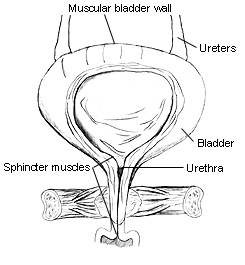
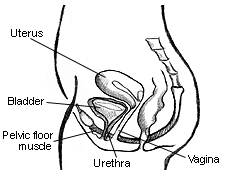
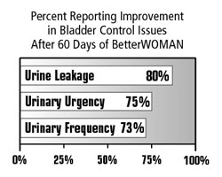

What are the ingredients in BetterWOMAN?
What are the major types of bladder control issues?
Why do bladder control issues happen?
How can BetterWOMAN help me?
How does BetterWOMAN work?
Is it safe to take BetterWOMAN?
How should I take BetterWOMAN?
Do I have to take BetterWOMAN forever?
What is your return policy?
Where can I find more information on female urinary control?
What are the ingredients in BetterWOMAN?
BetterWOMAN is a proprietary formula made of 20 natural Chinese herbs.
Each BetterWOMAN capsule contains 400mg of the herbal mixture. The following
is the list of the herbs and their key related functions according Traditional
Chinese Medicine theory.
Other ingredients include gelatin, microcrystalline cellulose, water, magnesium stearate and silicon dioxide.
What are the major types of bladder control issues?
There are three major types of bladder control issues. (1) Leakage of
small amounts of urine while you sneeze, cough or exercise. (2) Leakage
of large amounts of urine while you feel a sudden urge to urinate. (3)
Frequent urination. Many women have mixed types of bladder control issues.
While bladder control problems affect women and men of all age groups, it happens mostly to women. Research suggests that involuntary urine loss affects 16 million American women (National Family Opinion, August 2001), and the incidence increases as women age.

Why do bladder control issues happen?
Bladder control issues may be caused by medical conditions such as Multiple
Scleroses, Diabetes, Alzheimer Disease or surgeries. These medical conditions
may damage the nerve systems that control the bladder functions. People
with bladder control issues should check with physicians for potential
underlying medical conditions.
Bladder control issues mostly happen to menopausal and post-menopausal women, and to younger women after multiple childbirths. Hormone changes and the birthing process may weaken the tone and strength of the muscle systems that control the bladder functions. The major muscle groups involved in the bladder functioning such as sphincter muscles, bladder wall muscles, and pelvic muscles are shown in the two figures below. When these muscles are weakened, bladder control will become a problem.

Figure 1- Front View of bladder and sphincter muscles

Figure 2. -Side view of female pelvic muscles.
(These two figures are from National Kidney and Urologic Diseases Information Clearinghouse)
Many women are told that bladder control issues and urine loss are part of getting old. Many women are so embarrassed by the "accidents" and just use protective pads to get by. Based on Consumer Report (October 1997), only 25% of women with involuntary urine loss issues sought help.
It is absolutely not necessary to continue to suffer in silence. Bladder control can be regained. You can have your dependable body back. You may try Kegel exercises or behavior training techniques to strengthen pelvic muscles and improve bladder control. Now, BetterWOMAN is available to help you to regain bladder control naturally!

How can BetterWOMAN help me?
Featured on WebMD, BetterWOMAN is the first clinically tested natural
supplement shown effective in improving female bladder control.
BetterWOMAN reduces involuntary urine leakage, urinary urgency, and frequent urination. The success rate is 80% after 2 months of usage.
In a recent study of forty-five American women, aged 34 to 74, an overwhelming majority of women reported noticeable improvements after just 3 bottles (2 months) of BetterWOMAN. Some women even started to notice improvements within 10 days (see Testimonials).
Participants took a self-assessment questionnaire before and after taking BetterWOMAN. (Click here to view the questionnaire). For a participant to be considered "reported improved" in a specific parameter, her scores must change from "Always" to "Occasionally", or from "Frequent" to "Rarely". Data points were tabulated by independent third party. The study results are summarized in the following figure:

Some longer-term users (3 to 4 months) also reported increased energy levels, sexual libido and vaginal lubrication. Individual results may vary on sexual benefits.
BetterWOMAN is formulated for women by a woman. Peipei Wishnow, Ph.D. (see Company) is trained in U.S. pharmaceutical practices, but she also makes use of her heritage. As a third-generation Chinese medical professional, she understands the value of traditional herbal preparations as an integral part of healthcare options. Dr. Wishnow's BetterWOMAN supplement is based on Traditional Chinese Medicine (TCM) theory and has over 50 years of scientific and clinical support data.

How does BetterWOMAN work?
BetterWOMAN naturally improves blood circulation, promotes hormone balance
and modulates neuromuscular functions, based on Traditional Chinese Medicine
theory. It improves the tone and strength of muscle systems that control
the bladder functions. The stronger the muscles, the better the bladder
controls.

Is it safe to take BetterWOMAN?
There are no known side effects for taking BetterWOMAN. There are no known
contraindications with common medications.
BetterWOMAN contains no hormones or stimulants. All Chinese herbs used in the BetterWOMAN formula are pure, natural with over 50 years of safe and effective use. In a toxicity study, no abnormality was observed in lab animals fed with 330 folds of the human dosage of BetterWOMAN powder.
BetterWOMAN is manufactured in the USA under cGMP standards. Each batch of the product is assayed and guaranteed with no heavy metal contaminations.
General Warning: Keep the bottle out of the reach of children. Consult a health care professional if you are on any medications or prone to allergic reactions. Do not use if you are pregnant or nursing.

How should I take BetterWOMAN?
Each bottle of BetterWOMAN contains 40 capsules. Take 1 capsule after
breakfast and 1 after dinner. The minimum recommended dosage is 3 bottles
(2 months). Take a 3-day break between each bottle. Continue use thereafter
for ongoing improvements.
Do I have to take BetterWOMAN forever?
If you feel very comfortable with your regained bladder control, you can
take a break from using BetterWOMAN until you feel you need it again.
The benefits will not go away immediately. However since the human body
is a metabolizing machine, you may have to replenish your system based
on your individual need.
The best approach is to take BetterWOMAN on a regular basis. BetterWOMAN not only specifically improves bladder control but also systematically provides anti-aging benefits for women via improving blood circulation and modulating hormone balance naturally, especially for women over 45 years old. While the body is still full of vitality, the aging process starts to kick in and the biologic system starts slowly going down hill. It is important to provide the body some help to slow down the aging process. BetterWOMAN can help you.
What is your return policy?
We provide a 60-day return policy for first time customers. Simply return
the product within 60 days of purchase with the original receipt from
Interceuticals. You will be credited for the unopened bottles, less shipping
and handling costs. This policy is effective January 1st, 2006.
Where can I find more information on female urinary
control?
Please check the websites of the following organizations.